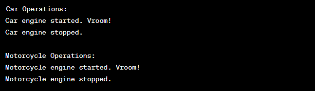

Write a Java program to create an abstract class Vehicle with abstract methods startEngine() and stopEngine(). Create subclasses Car and Motorcycle that extend the Vehicle class and implement the respective methods to start and stop the engines for each vehicle type.
Code:-
abstract class Vehicle {
// Abstract methods to be implemented by subclasses
public abstract void startEngine();
public abstract void stopEngine();
}
class Car extends Vehicle {
@Override
public void startEngine() {
System.out.println("Car engine started. Vroom!");
}
@Override
public void stopEngine() {
System.out.println("Car engine stopped.");
}
}
class Motorcycle extends Vehicle {
@Override
public void startEngine() {
System.out.println("Motorcycle engine started. Vroom!");
}
@Override
public void stopEngine() {
System.out.println("Motorcycle engine stopped.");
}
}
public class VehicleExample {
public static void main(String[] args) {
// Creating objects of Car and Motorcycle
Car car = new Car();
Motorcycle motorcycle = new Motorcycle();
// Starting and stopping engines
System.out.println("Car Operations:");
car.startEngine();
car.stopEngine();
System.out.println("\nMotorcycle Operations:");
motorcycle.startEngine();
motorcycle.stopEngine();
}
}
Output:-
